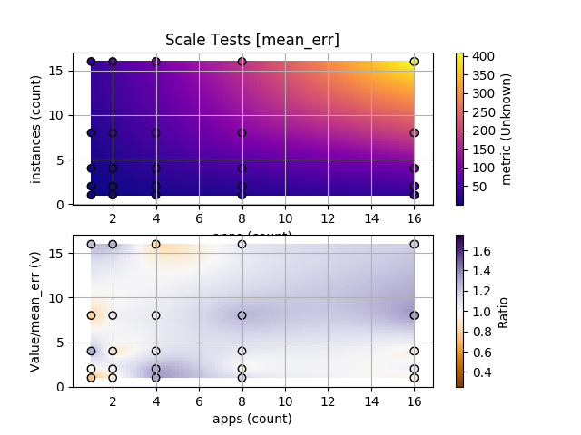
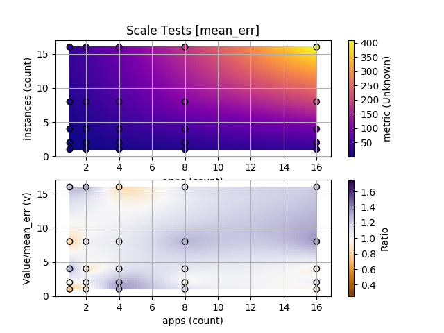

Recipes¶
This section contains various copy-paste-friendly YAML recipes for addressing frequently-encountered problems.
Launching an app, not part of the test¶
Some times you might want to launch an application that is going to run for the duration of the test but it’s not active part of the test.
To launch such applications you can use a CmdlineChannel with the following configuration:
channels:
- class: channel.CmdlineChannel
# Start this app at launch time and keep it alive
atstart: yes
relaunch: yes
# The command-line to launch.
cmdline: "path/to/app --args "
Note
It’s important not to include any {{macro}} in the channel. Doing so will
link the channel to a parameter and make it part of the test.
Including reference data in your plots¶
If you are running the tests as part of a CI you migth be interested into
comparing the results to a reference run. To do so, use the reference
parameter in the PlotReporter.
The url should point to a URL where a raw dump (generated by a
RawReporter) is available. This raw dump will be used
as a reference:
reporters:
- class: reporter.PlotReporter
# Use the given reference
reference:
data: http://path.to/refernce-raw.json
The reference can be computed for 1D and 2D plots. For example:
 
